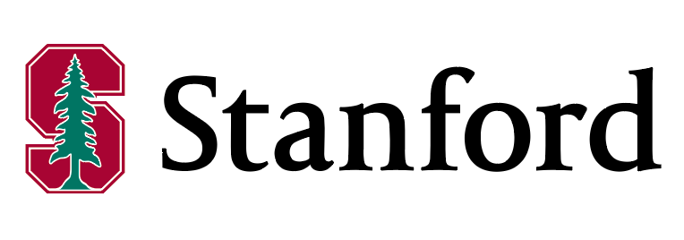
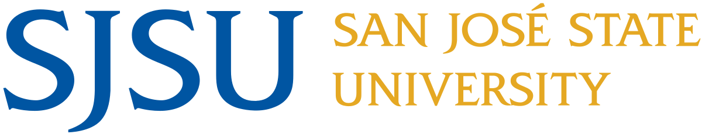
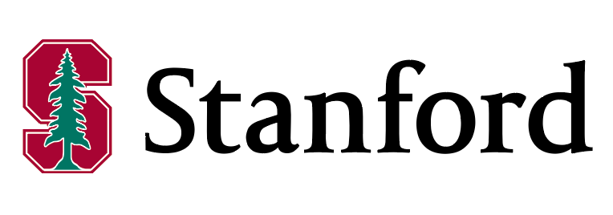
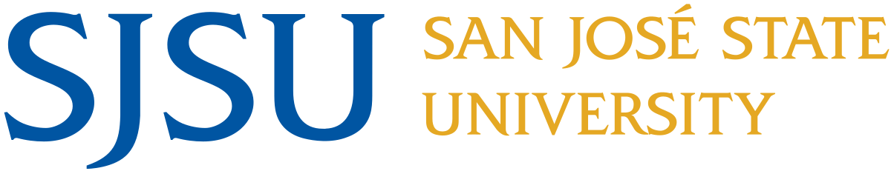

About
Hi, I'm Ching! I am a software engineer who is passionate about debugging code, user experience, and accessibility. My passion for software engineering stems from my teaching background in public education and experience in a technology focused school. I am currently raising a black lab puppy for Guide Dogs for the Blind, where my drive for accessibility comes from. When I'm not at my desk, I'm probably eating some good food, drinking boba, working on a Studio Ghibli puzzle, or hanging out with my puppy, Guava.
 


